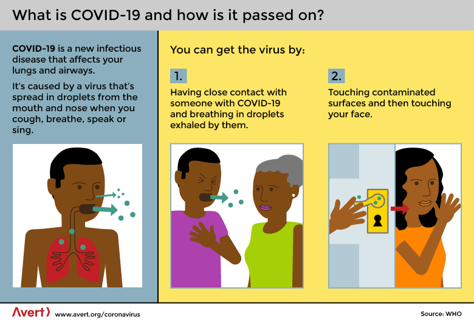
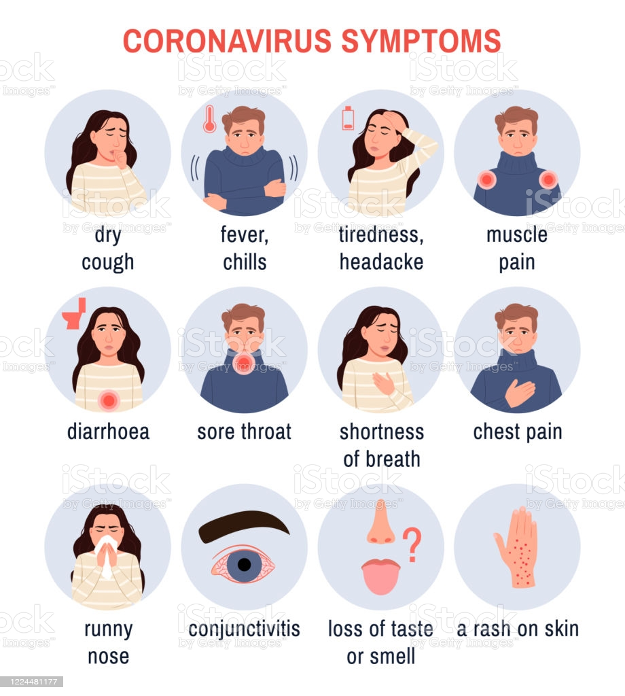
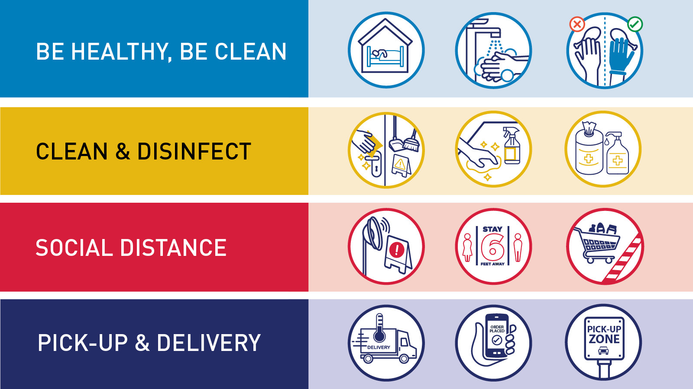

(CLINICA MANAGEMENT
PROTOCOL: COVID-19
)
What Is Coronavirus?
Coronaviruses are a type of virus. There are many different kinds, and some cause disease. A coronavirus identified in 2019, SARS-CoV-2, has caused a pandemic of respiratory illness, called COVID-19.How does the coronavirus spread?
How did the coronavirus start?
What is the incubation period for COVID-19?
Symptoms show up in people within two to 14 days of exposure to the virus. A person
infected with the coronavirus is contagious to others for up to two days before
symptoms appear, and they remain contagious to others for 10 to 20 days, depending
upon their immune system and the severity of their illness.What are symptoms of coronavirus?
- *Cough
- *Fever or chills
- *Shortness of breath or difficulty breathing
- *Muscle or body aches
- *Sore throat
- *New loss of taste or smell
- *Diarrhea
- *Headache
- *New fatigue
- *Nausea or vomiting
- *Congestion or runny nose
How is COVID-19 diagnosed?
COVID-19 is diagnosed through a laboratory test. Diagnosis by examination alone is
difficult since many COVID-19 signs and symptoms can be caused by other illnesses.
Some people with the coronavirus do not have symptoms at all. Learn more about
COVID-19 testing.How is COVID-19 treated?
Treatment for COVID-19 addresses the signs and symptoms of the infection and
supports people with more severe disease. For mild cases of coronavirus disease, your
doctor may recommend measures such as fever reducers or over-the-counter medications. More severe cases may require hospital care, where a patient may receive
a combination of treatments that could include steroids, oxygen, mechanical breathing
support and other COVID-19 treatments in development. Infusions of monoclonal antibodies given to certain patients early in the infection may reduce the symptoms,
severity and duration of the illness.How do you protect yourself from this coronavirus?
Vaccines are now authorized to prevent infection with SARS-CoV-2, the coronavirus that
causes COVID-19. But until more is understood about how the vaccines affect a person’s
ability to transmit the virus, precautions such as mask-wearing, physical distancing and
hand hygiene should continue regardless of a person’s vaccination status to help
prevent the spread of COVID-19. Learn more about the COVID-19 vaccine and ways to
protect yourself.Are there different variants of this coronavirus?
Yes, there are different variants of this coronavirus. Like other viruses, the coronavirus
that causes COVID-19 can change (mutate). In December 2020, B.1.1.7, a new variant,
was identified in the United Kingdom, and since then, variants have appeared in other
locations around the world, including B.1.351, first isolated in South Africa, and others. Mutations may enable the coronavirus to spread faster from person to person, and may
cause more severe disease. More infections can result in more people getting very sick
and also create more opportunity for the virus to develop further mutations. Read more
about coronavirus variants.About Coronaviruses
CaronaavirusesCoronaviruses are common in different animals. Rarely, an animal coronavirus can infect humans.- There are many different kinds of coronaviruses. Some of them can cause colds or other mild respiratory (nose, throat, lung) illnesses.
- Other coronaviruses can cause serious diseases, including severe acute respiratory syndrome (SARS) and Middle East respiratory syndrome (MERS).
General guidelines
- Use appropriate PPE for specimen collection (droplet and contact precautions for URT specimens; airborne precautions for LRT specimens). Maintain proper infection control when collecting specimens.
- Restricted entry to visitors or attendants during sample collection
- Complete the requisition form for each specimen submitted
- Proper disposal of all waste generated
Case definition
- A patient with acute respiratory illness (fever and at least one sign/symptom of respiratory disease, e.g., cough, shortness of breath), AND a history of travel to or residence in a location reporting community transmission of COVID-19 disease during the 14 days prior to symptom onset;
- A patient with any acute respiratory illness AND having been in contact with a confirmed or probable COVID-19 case in the last 14 days prior to symptom onset;
- A patient with severe acute respiratory illness (fever and at least one sign/symptom of respiratory disease, e.g., cough, shortness of breath; AND requiring hospitalization) AND in the absence of an alternative diagnosis that fully explains the clinical presentation.
- A suspect case for whom testing for the COVID-19 virus is inconclusive.
- A suspect case for whom testing could not be performed for any reason.
- A person with laboratory confirmation of COVID-19 infection, irrespective of clinical signs and symptoms.
Infection Prevention and Control Practices
Keep yourself and others safe: Do it all!
- Get vaccinated as soon as it’s your turn and follow local guidance on vaccination.
- Keep physical distance of at least 1 metre from others, even if they don’t appear to be sick. Avoid crowds and close contact.
- Wear a properly fitted mask when physical distancing is not possible and in poorly ventilated settings.
- Clean your hands frequently with alcohol-based hand rub or soap and water.
- Cover your mouth and nose with a bent elbow or tissue when you cough or sneeze. Dispose of used tissues immediately and clean hands regularly.
- If you develop symptoms or test positive for COVID-19, self-isolate until you recover.
Wear a mask properly
- Make sure your mask covers your nose, mouth and chin.
- Clean your hands before you put your mask on, before and after you take it off, and after you touch it at any time.
- When you take off your mask, store it in a clean plastic bag, and every day either wash it if it’s a fabric mask or dispose of it in a trash bin if it’s a medical mask.
- Don’t use masks with valves.
Make your environment safer
- Avoid the 3Cs: spaces that are closed, crowded or involve close contact.
- Meet people outside. Outdoor gatherings are safer than indoor ones, particularly if indoor spaces are small and without outdoor air coming in.
- If you can’t avoid crowded or indoor settings, take these precautions:
- Open a window to increase the amount of natural ventilation when indoors.
- Wear a mask (see above for more details)
Keep good hygiene
By following good respiratory hygiene you protect the people around you from viruses that cause colds, flu and COVID-19.
- Regularly and thoroughly clean your hands with either an alcohol-based hand rub or soap and water. This eliminates germs that may be on your hands, including viruses.
- Cover your mouth and nose with your bent elbow or a tissue when you cough or sneeze. Dispose of the used tissue immediately into a closed bin and wash your hands.
- Clean and disinfect surfaces frequently, especially those which are regularly touched, such as door handles, faucets and phone screens.
What to do if you feel unwell
- If you have a fever, cough and difficulty breathing, seek medical attention immediately. Call by telephone first and follow the directions of your local health authority.
- Know the full range of symptoms of COVID-19. The most common symptoms of COVID-19 are fever, dry cough, tiredness and loss of taste or smell. Less common symptoms include aches and pains, headache, sore throat, red or irritated eyes, diarrhoea, a skin rash or discolouration of fingers or toes.
- Stay home and self-isolate for 10 days from symptom onset, plus three days after symptoms cease. Call your health care provider or hotline for advice. Have someone bring you supplies. If you need to leave your house or have someone near you, wear a properly fitted mask to avoid infecting others.
- Keep up to date on the latest information from trusted sources, such as WHO or your local and national health authorities. Local and national authorities and public health units are best placed to advise on what people in your area should be doing to protect themselves.
As of now, researchers know that the coronavirus is spread through droplets and virus particles released into the air when an infected person breathes talks laughs sings particles released into the air when an infected person breathes, talks, laughs, sings, coughs or sneezes. Larger droplets may fall to the ground in a few seconds, but tiny infectious particles can linger in the air and accumulate in indoor places, especially where many people are gathered and there is poor ventilation. This is why maskwearing, hand hygiene and physical distancing are essential to preventing COVID-19.

The first case of COVID-19 was reported Dec. 1, 2019, and the cause was a then-new coronavirus later named SARS-CoV-2. SARS-CoV-2 may have originated in an animal and changed (mutated) so it could cause illness in humans. In the past, several infectious disease outbreaks have been traced to viruses originating in birds, pigs, bats and other animals that mutated to become dangerous to humans. Research continues, and more study may reveal how and why the coronavirus evolved to cause pandemic disease.
COVID-SYMPTOMS INCLUDE:


Suspect case
Probable case
Confirmed case
Infection prevention control (IPC) is a critical and integral part of clinical management of patients and should be initiated at the point of entry of the patient to hospital (typically the Emergency Department). Standard precautions should always be routinely applied in all areas of health care facilities. Standard precautions include hand hygiene; use of PPE to avoid direct contact with patients’ blood, body fluids, secretions (including respiratory secretions) and non-intact skin. Standard precautions also include prevention of needlestick or sharps injury; safe waste management; cleaning and disinfection of equipment; and cleaning of the environment.
Table: Infection prevention control practices| At triage | Give suspect patient a triple layer surgical mask and direct patient to separate area, an isolation room if available. Keep at least 1meter distance between suspected patients and other patients. Instruct all patients to cover nose and mouth during coughing or sneezing with tissue or flexed elbow for others. Perform hand hygiene after contact with respiratory secretions |
| Apply standard precautions | Apply standard precautions according to risk assessment for all patients, at all times, when providing any diagnostic and care services. Standard precautions include hand hygiene and the use of personal protective equipment (PPE) when risk of splashes or in contact with patients’ blood, body fluids, secretions (including respiratory secretions) and non-intact skin. Standard precautions also include appropriate patient placement; prevention of needlestick or sharps injury; safe waste management; cleaning and disinfection of equipment; and cleaning of the environment. Best practices for safely managing health care waste should be followed. |
| Apply droplet precautions | Droplet precautions prevent large droplet transmission of respiratory viruses. Use a triple layer surgical mask if working within 1-2 meters of the patient. Place patients in single rooms, or group together those with the same etiological diagnosis. If an etiological diagnosis is not possible, group patients with similar clinical diagnosis and based on epidemiological risk factors, with a spatial separation. When providing care in close contact with a patient with respiratory symptoms (e.g. coughing or sneezing), use eye protection (face-mask or goggles), because sprays of secretions may occur. Limit patient movement within the institution and ensure that patients wear triple layer surgical masks when outside their rooms. |
| Apply contact precautions | Droplet and contact precautions prevent direct or indirect transmission from contact with contaminated surfaces or equipment (i.e. contact with contaminated oxygen tubing/interfaces). Use PPE (triple layer surgical mask, eye protection, gloves and gown) when entering room and remove PPE when leaving. If possible, use either disposable or dedicated equipment (e.g. stethoscopes, blood pressure cuffs and thermometers). If equipment needs to be shared among patients, clean and disinfect between each patient use. Ensure that health care workers refrain from touching their eyes, nose, and mouth with potentially contaminated gloved or ungloved hands. Avoid contaminating environmental surfaces that are not directly related to patient care (e.g. door handles and light switches). Ensure adequate room ventilation. Avoid movement of patients or transport. Perform hand hygiene. |
| Apply airborne precautions when performing an aerosol generating procedure | Ensure that healthcare workers performing aerosol-generating procedures (i.e. open suctioning of respiratory tract, intubation, bronchoscopy, cardiopulmonary resuscitation) use PPE, including gloves, long-sleeved gowns, eye protection, and fit-tested particulate respirators (N95). (The scheduled fit test should not be confused with user seal check before each use.) Whenever possible, use adequately ventilated single rooms when performing aerosol-generating procedures, meaning negative pressure rooms with minimum of 12 air changes per hour or at least 160 liters/second/patient in facilities with natural ventilation. Avoid the presence of unnecessary individuals in the room. Care for the patient in the same type of room after mechanical ventilation commences. Because of uncertainty around the potential for aerosolization, highflow nasal oxygen (HFNO), NIV, including bubble CPAP, should be used with airborne precautions until further evaluation of safety can be completed. There is insufficient evidence to classify nebulizer therapy as an aerosol-generating procedure that is associated with transmission of COVID-19. More research is needed. |
Protect yourself and those around you:
More about masks
The risks of getting COVID-19 are higher in crowded and inadequately ventilated spaces where infected people spend long periods of time together in close proximity.
Outbreaks have been reported in places where people have gather, often in crowded indoor settings and where they talk loudly, shout, breathe heavily or sing such as restaurants, choir practices, fitness classes, nightclubs, offices and places of worship.